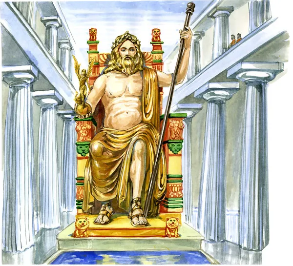

7 maravilhas do mundo antigo
As sete maravilhas do mundo antigo são construções que Filão de Bizâncio, no século III a.C., afirmou serem merecedoras de serem vistas por todos.
O que são as sete maravilhas do mundo antigo?
As sete maravilhas do mundo antigo são construções da Antiguidade listadas como grandes obras da humanidade. A lista tradicional que menciona as diferentes construções foi elaborada por um grego que se identificava como Filão de Bizâncio. Esse autor grego viveu no século III a.C., legando essa lista como sua grande obra.
A lista de Filão de Bizâncio não foi a única do tipo realizada na Antiguidade, havendo outras de autores como Heródoto, mas foi a lista dele que se tornou a mais popular, principalmente pela quantidade de detalhes. A lista elaborada por esse grego tinha a intenção de citar lugares que as pessoas deveriam conhecer/ver.
As sete maravilhas lisadas por ele são a Grande Pirâmide de Gizé, os Jardins Suspensos da Babilônia, a Estátua de Zeus, o Templo de Ártemis, o Mausoléu de Halicarnasso, o Colosso de Rodes e o Farol de Alexandria. A seguir, veremos sobre cada uma delas.
Grande Pirâmide de Gizé
A Grande Pirâmide de Gizé é, provavelmente, a mais famosa de todas as maravilhas que foram listadas por Filão. Isso porque de todas as sete maravilhas, a Grande Pirâmide de Gizé é a única que sobreviveu à ação do tempo, estando localizada nos arredores da cidade de Cairo, capital do Egito, sendo bastante visitada por turistas de todas as partes do planeta.
Essa pirâmide foi construída durante o reinado de Quéops (2589 a.C. a 2566 a.C.), faraó da quarta dinastia egípcia. Lembrando que as pirâmides eram tumbas, e a construção dessa pirâmide se estendeu por cerca de 20 anos, possuindo um total de 146 metros de altura, uma base com 230 metros de comprimento e cerca de 2 milhões de blocos de pedra.
Jardins Suspensos da Babilônia
Os Jardins Suspensos da Babilônia foram supostamente construídos durante o reinado de Nabucodonosor, rei de Império Babilônico entre os anos de 605 a.C. e 562 a.C. Existe uma grande controvérsia acerca da existência dessa construção, porque não existem muitas evidências que comprovem que ela de fato existiu.
Os relatos que mencionam os Jardins Suspensos da Babilônia são de viajantes que passaram pela região, e não existem fontes babilônicas que citem essa construção. A narrativa sobre essa construção menciona que Nabucodonosor ordenou construir um prédio com vários andares e alocar enormes jardins neles. Diz-se que o rei babilônico fez isso para amenizar a tristeza de sua esposa, que sentia falta das montanhas e florestas de sua terra.
Estátua de Zeus
A Estátua de Zeus estava localizada em Olímpia, cidade que tinha em Zeus o seu deus patrono. Essa estátua foi construída por um escultor chamado Fídias, sendo produzida em marfim e ouro. Viajantes que passavam pela cidade grega iam até o templo em que estava a estátua para prestar homenagem a esse deus grego.
A estátua ficava em um templo que havia sido construído no século V a.C., media 12 metros de altura e foi construída por volta de 435 a.C. A ascensão do cristianismo fez com que o Templo de Zeus e a estátua fossem abandonados. Por volta do século V d.C., a estátua foi levada para Constantinopla, onde foi perdida e provavelmente destruída por algum terremoto.
Templo de Ártemis
O Templo de Ártemis, construído em homenagem à deusa grega Ártemis, estava localizado em Éfeso, cidade grega na Ásia Menor. Sua construção foi finalizada em 550 a.C., possuindo 129 metros de comprimento, 69 metros de largura um total de 127 colunas com 18 metros de altura.
No interior do templo estava uma estátua de Ártemis, que, assim como a estátua de Zeus em Olímpia, era local de visitação, onde muitos deixavam oferendas. A construção desse templo foi financiada pelo rei da Lídia, o rei Creso.
Ao longo da história, o Templo de Ártemis foi destruído diversas vezes:
- Em 21 de julho de 356 a.C., um homem chamado Heróstrato incendiou o templo com o objetivo de que seu nome fosse lembrado pela eternidade.
- Depois de sua reconstrução, foi destruído durante um ataque dos godos a Éfeso em 267 d.C.
- Reconstruído novamente, o templo foi destruído por um ataque promovido por cristãos liderados por São João Crisóstomo, em 401.
Mausoléu de Halicarnasso
O Mausoléu de Halicarnasso foi uma tumba construída para Mausuloluída em 351 a.C. O nome do sátrapa acabou nomeando essa construção. A morte de Mausulo aconteceu em 353 a.C., sendo que a tumba dele foi construída por dois arquitetos gregos chamados Sátiro e Pítis.
A construção do mausoléu foi coordenada pela esposa de Mausulo, chamada Artemísia. Ela queria que seu marido tivesse um imponente lugar de descanso e por isso autorizou a construção de uma tumba gigantesca em Halicarnasso, cidade grega na Ásia Menor. O Mausoléu de Halicarnasso possuía 41 metros de altura, sendo destruído tempos depois pela ação de terremotos.
As ruínas do mausoléu ficaram abandonadas até o século XV, mas no ano de 1494, as pedras que fizeram parte da construção foram utilizadas para a construção de um castelo em Bodrum (atual cidade que fica no local onde ficava Halicarnasso).
Colosso de Rodes
O Colosso de Rodes foi uma grande estátua construída em homenagem a Hélio, o deus Sol na religiosidade grega e o patrono da cidade de Rodes na Antiguidade. Acredita-se que sua construção tenha sido realizada entre os anos de 292 a.C. e 280 a.C., localizada um pouco acima do porto de Rodes. O construtor dessa estátua foi Carés de Lindos.
A estátua teria sido construída como butim de guerra depois que invasores abandonaram Rodes, deixando para trás uma grande quantidade de equipamentos e recursos. O Colosso de Rodes tinha 33 metros de altura, mas teve vida curta, sendo destruído por um terremoto que aconteceu por volta de 228 a.C. As ruínas da estátua ficaram em Rodes até o século VII d.C., quando foram vendidas e derretidas por um comerciante.
Farol de Alexandria
O Farol de Alexandria foi construído na ilha de Faros, localizada nas proximidades da cidade de Alexandria, uma das cidades mais importantes do Egito durante o período Helenístico. Foi construído durante o reinado de Ptolomeu II, e o responsável por sua construção foi um arquiteto chamado Sóstrato de Cnido.
A construção do Farol de Alexandria se estendeu durante o período de 300 a.C. a 280 a.C. Ele possuía cerca de 134 metros de altura, sendo uma das construções mais altas da Antiguidade, e a luz desse farol podia ser vista a mais de 50 quilômetros de distância. O Farol de Alexandria foi destruído por uma sucessão de terremotos que aconteceram em 956, 1303, 1323 e 1480, quando foi destruído definitivamente.